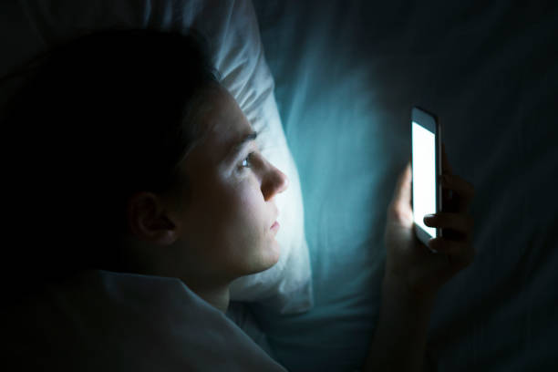

Introduction
Picture this: it's a beautiful Saturday morning. The sun is shining, the birds are singing, the trees swaying and yet, you're cooped up inside,
scrolling through Tiktok or Instagram reels, with the occassional smile appearing on your face. Each video holds your attention for no more than a second
or two, before you swipe straight to the next one. Every now and then, there's one video that manages to keep you hooked! And so you keep scrolling,
and scrolling, and scrolling, searching for that next engaging video, that overwhelming flood of dopamine you felt when first opening the app.
At what point is instant entertainment considered an issue?
This aparantley hamrless habit stems from part of a much larger, and considerably more dangerous, pattern. For millions of young people all accross the world,
time spent online has become an ever-increasing faucet of everyday life. For example, DemandSage's report on screen time usage 2026 states that 41% of teens
worldwide spend 8 hours a day on screens and social media. That makes up a third of a teens entire day, which is already occupied by other commitments, such as
school, part-time jobs and sleep, leaving almost no time for in person social interaction.
Our teen years are some the most transformative and important years of our entire lives, as a result of how much change occurs during this period of time.
Whether it be through puberty, self-dicovery or the lifelong connections we may form, crippling social meia addiction gets in the way of a lot of that.
Take for example, my life, at least recently.
I am, what one would consider, an "over-achiever." Look at what you're reading right now. This was just supposed to be somefeature article, formatted on some
google doc, and yet I've built an entire website from the ground up for this. That being said, by NO means am I healthily productive when it comes to...
well producing things. This project could have been done much quicker, and also with consierably less stress if I had devoted more time to it. Instead, I sunk
many, many hours into scrolling youtube shorts, that could have been spent completing the various assignments I have due. Instead, here I am, at 1:42 am,
clambering to get everything together before the due date.
Of course, that itself is a major issue, but endless scrolling also presents many further issues.
The Psyche behind the Swipe
Before getting into the nitty gritty negatives surrounding social media addiction, It's important to recognise the actual psychological workings bringing
us back for more. Earlier the hormone "dopamine" was mentioned. Most people know dopamine as the "pleasure" hormone, and while dopamine does play a part in our
experiences of pleasure, dopamine is a catalyst for much more. Dopamine plays a much larger role in motivation, reward anticipation and learning. In other words,
dopamine tells our brains what actions to repeat.
Dopamine is released in response, to rewarding experiences, though not all rewards are formed equally. When an expected outcome occurs, our brains respond
accordingly, providing a small chunk of dopamine. However, when receiving an unexpected and positive signal, such as receiving a text message from your best
friend, getting a notifcation from your favourite content creator, or even scrolling upon a video we happen to love, a large burst of dopamine
is released.
Larger bursts of dopamine are important to the scrolling cycle. We can never know when the next funny video, entertaining post or exciting notification
pops up, which incentivises us to keep checking. And so, we scroll in constant anticipation of the next reward, oftentimes without even recognising we have.
The worst part behind these psychological factors comes in the fact that this bordeling emotional manipulation is intentionally designed. Social media is programmed to capitilise off these psychological mechanisms, and encourage engagement for as long as possible. Combined with everything else that teens already live to suffer through, its no wonder they get caught in the trap that is social media.

Sleep-Scrolling
How often do you find yourself curled up in bed, with a warm cup of hot chocolate by your side and a good book in hand? Now then, how often do you find yourself laying in bed like a zombie a zombie in the ground, staring aimlessly into a tiny device basking your face in bright blue light? You more than likely identify with the second scenario much more than the first one, and the statistics show it too. As of 2023, 82.9% of teens used a phone or smart watch, or slept with one, an hour before sleeping (Australian Beaureu of Statistics, 2026- Childrens Physical activity, screen time and sleep).
To emphasise the value of sleep for teenagers, lets take a step back and look at the broader scope of a teens life.
Sleep acts as an opportunity for our brains to essentially detox and clean themselves. Teens are hormonal. They're irrational, reckless, they are developing.
Because of this, the processing and detoxing provided by sleeping is signifiantly more crucial than the likes of an adult, who has already undergone many of
the transformations that occur during puberty.
Teens are already inclined to stay up later because of our primordial ancestors, of which adolecents-typically some of the fittest of a community-
would stay up during the night and protect the adults and children while they slept from nocturnal predators. The introduction of something like social media,
which is made to be addictive, as well as the blue light that the devices social media exist on emit, teens often find themselves outright replacing sleep.
Because now there's a lack of sleep, when difficult emotional moments occur during the day (which is only increased because of the hormones running wild in teens
brains at the time), there is less provided time to fully proccess, which can result in major mental health issues like depression and extreme anxiety.
We already suffer through a myriad of social pressures as teens, and social media provides an escape from the loneliness and stress that come from that. That being said, social media is also a platform where everyone posts their "best moments." People love to manufacture their appearance and personality, to come off as "perfect" and "well-off," masking their true feelings. Teens that are trying to escape the harshness of reality may find solace in these "perfect lives," and try to replicate it, resulting in negative self image, potentially resulting in eating disorders and low self-esteem.
Call to action
That being said, it isn't all grim and melancholic. Social media addiction can be treated and prevented in a variety of ways, and effectively implementing these various strategies are necessary to limiting the negative affects of social media on our teen demographic. Parents can intervene via offerring guidance, enforcing time limits on social media sites such as Youtube or TikTok, and most importantly, parents can aid by providing a space in which teens feel confident to speak about what they see online, and openly communicate with them. Teens themself can self-regulate through means of mindfullnes and awareness, and adopting the ability to self-regulate. It's important to recognise that much like a substance addiction, getting clean from a social media adiction is a difficult and arduous process, so it's important we approach recovering people with patience and empathy.